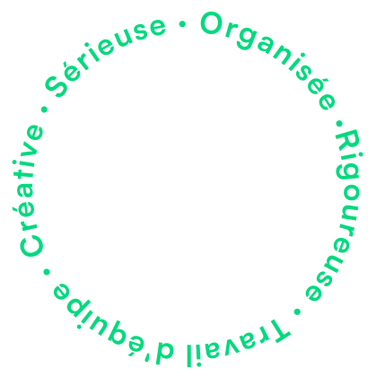
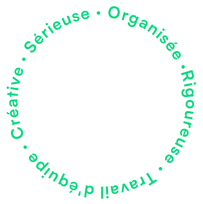

Bonjour je suis Lola Navarro
Webdesign & Communication
Étudiante à l’IUT de Lannion en 2e année de BUT MMI (Métiers du Multimédia et de l’Internet) et Etudiante-Entrepreneure à Pépite France
 


Développement web
Développer des interfaces web dynamiques qui interagissent avec des données réelles.
Webdesign
Créer des designs attractifs, utilisables et utile répondant aux attentes d’utilisateurs.
Design / graphisme
Composer des visuels pour promouvoir une marque, un produit, des événements...
Audiovisuel
Filmer, monter et prendre des photos pour transmettre des messages clés.
Gestion de projet
Superviser une équipe pour gérer de manière optimale les différents projets universitaires.